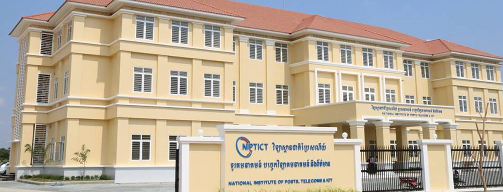
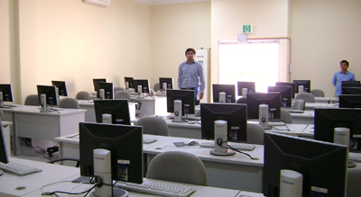
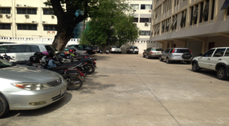
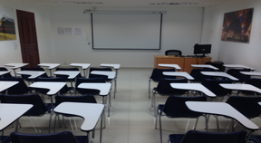
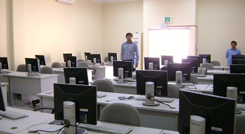
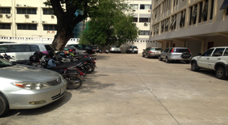
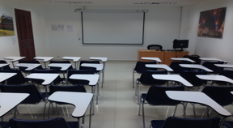

Welcom to NIPTICT
New Building and Campu
New building and Campus of NIPTICT is about 7 kilometers south from center of Phnom Penh on National road 6A.
 





Classroom
The classroom are equipped with the latest teaching aids including overhead projectors.
Lecturer shall be conducted by qualified faculties seperately for each module.
The faulty shall utilize automatic slide-shows and LCD projectors hereby enhancing the effective of the lecturer.
Computer Lab
The labs are the main area of focus as it provides practical application training to the students.
Well-qualified labs instructors shall be present in the labs at all times.
The labs are equipped with the latest hardware & software configurations.
Copyright 2017 NIPTICT.
All Right Reserved. Last modified on 01 June 2016 by info@niptict.edu.kh